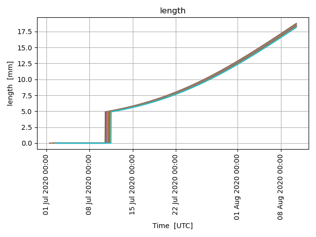

Note
Go to the end to download the full example code.
Fish Eggs and Larvae
from datetime import datetime, timedelta
from opendrift.readers.reader_constant import Reader as ConstantReader
from opendrift.models.larvalfish import LarvalFish
o = LarvalFish(loglevel=50)
No horizontal movement, here only investigating vertical mixing and swimming
r = ConstantReader(
{'x_sea_water_velocity': 0, 'y_sea_water_velocity': 0, 'x_wind': 0, 'y_wind': 0,
'sea_water_temperature': 10,
'land_binary_mask': 0, 'ocean_vertical_diffusivity': .02})
o.add_reader(r)
o.set_config('general:use_auto_landmask', False)
Seeding 20 fish eggs, which will hatch as larvae after some time, depending om temperature
time = datetime(2020, 7, 1, 12)
o.seed_elements(lon=4, lat=60, time=[time, time+timedelta(hours=24)], number=20)
o.run(duration=timedelta(days=40))
<xarray.Dataset> Size: 2MB
Dimensions: (trajectory: 20, time: 961)
Coordinates:
* trajectory (trajectory) int64 160B 0 1 ... 19
* time (time) datetime64[ns] 8kB 2020-...
Data variables: (12/31)
status (trajectory, time) float32 77kB ...
moving (trajectory, time) float32 77kB ...
age_seconds (trajectory, time) float32 77kB ...
origin_marker (trajectory, time) float32 77kB ...
lon (trajectory, time) float32 77kB ...
lat (trajectory, time) float32 77kB ...
... ...
ocean_vertical_diffusivity (trajectory, time) float32 77kB ...
ocean_mixed_layer_thickness (trajectory, time) float32 77kB ...
sea_water_temperature (trajectory, time) float32 77kB ...
sea_water_salinity (trajectory, time) float32 77kB ...
sea_surface_wave_stokes_drift_x_velocity (trajectory, time) float32 77kB ...
sea_surface_wave_stokes_drift_y_velocity (trajectory, time) float32 77kB ...
Attributes: (12/130)
Conventions: CF...
standard_name_vocabulary: CF...
featureType: tr...
title: Op...
summary: Ou...
keywords: tr...
... ...
geospatial_lon_units: de...
geospatial_lon_resolution: point
runtime: 0:...
geospatial_vertical_min: -1...
geospatial_vertical_max: 0.0
geospatial_vertical_positive: upxarray.Dataset
- trajectory: 20
- time: 961
- trajectory(trajectory)int640 1 2 3 4 5 6 ... 14 15 16 17 18 19
- cf_role :
- trajectory_id
- dtype :
- <class 'numpy.int32'>
array([ 0, 1, 2, 3, 4, 5, 6, 7, 8, 9, 10, 11, 12, 13, 14, 15, 16, 17, 18, 19]) - time(time)datetime64[ns]2020-07-01T12:00:00 ... 2020-08-...
- standard_name :
- time
- long_name :
- time
- dtype :
- <class 'numpy.float64'>
array(['2020-07-01T12:00:00.000000000', '2020-07-01T13:00:00.000000000', '2020-07-01T14:00:00.000000000', ..., '2020-08-10T10:00:00.000000000', '2020-08-10T11:00:00.000000000', '2020-08-10T12:00:00.000000000'], shape=(961,), dtype='datetime64[ns]')
- status(trajectory, time)float320.0 0.0 0.0 0.0 ... 0.0 0.0 0.0 0.0
- dtype :
- <class 'numpy.int32'>
- valid_range :
- [0 0]
- flag_values :
- [0]
- flag_meanings :
- active
array([[ 0., 0., 0., ..., 0., 0., 0.], [nan, 0., 0., ..., 0., 0., 0.], [nan, nan, 0., ..., 0., 0., 0.], ..., [nan, nan, nan, ..., 0., 0., 0.], [nan, nan, nan, ..., 0., 0., 0.], [nan, nan, nan, ..., 0., 0., 0.]], shape=(20, 961), dtype=float32) - moving(trajectory, time)float321.0 1.0 1.0 1.0 ... 1.0 1.0 1.0 1.0
- dtype :
- <class 'numpy.int32'>
- minval :
- 1
- maxval :
- 1
array([[ 1., 1., 1., ..., 1., 1., 1.], [nan, 1., 1., ..., 1., 1., 1.], [nan, nan, 1., ..., 1., 1., 1.], ..., [nan, nan, nan, ..., 1., 1., 1.], [nan, nan, nan, ..., 1., 1., 1.], [nan, nan, nan, ..., 1., 1., 1.]], shape=(20, 961), dtype=float32) - age_seconds(trajectory, time)float320.0 3.6e+03 ... 3.37e+06 3.373e+06
- dtype :
- <class 'numpy.float32'>
- units :
- s
- minval :
- 0.0
- maxval :
- 3456000.0
array([[ 0., 3600., 7200., ..., 3448800., 3452400., 3456000.], [ nan, 0., 3600., ..., 3445200., 3448800., 3452400.], [ nan, nan, 0., ..., 3441600., 3445200., 3448800.], ..., [ nan, nan, nan, ..., 3373200., 3376800., 3380400.], [ nan, nan, nan, ..., 3369600., 3373200., 3376800.], [ nan, nan, nan, ..., 3366000., 3369600., 3373200.]], shape=(20, 961), dtype=float32) - origin_marker(trajectory, time)float320.0 0.0 0.0 0.0 ... 0.0 0.0 0.0 0.0
- dtype :
- <class 'numpy.int32'>
- unit :
- description :
- An integer kept constant during the simulation. Different values may be used for different seedings, to separate elements during analysis. With GUI, only a single seeding is possible.
- flag_values :
- [0]
- flag_meanings :
- Seed_0
- minval :
- 0
- maxval :
- 0
array([[ 0., 0., 0., ..., 0., 0., 0.], [nan, 0., 0., ..., 0., 0., 0.], [nan, nan, 0., ..., 0., 0., 0.], ..., [nan, nan, nan, ..., 0., 0., 0.], [nan, nan, nan, ..., 0., 0., 0.], [nan, nan, nan, ..., 0., 0., 0.]], shape=(20, 961), dtype=float32) - lon(trajectory, time)float324.0 4.0 4.0 4.0 ... 4.0 4.0 4.0 4.0
- dtype :
- <class 'numpy.float32'>
- units :
- degrees_east
- standard_name :
- longitude
- long_name :
- longitude
- axis :
- X
- minval :
- 4.0
- maxval :
- 4.0
array([[ 4., 4., 4., ..., 4., 4., 4.], [nan, 4., 4., ..., 4., 4., 4.], [nan, nan, 4., ..., 4., 4., 4.], ..., [nan, nan, nan, ..., 4., 4., 4.], [nan, nan, nan, ..., 4., 4., 4.], [nan, nan, nan, ..., 4., 4., 4.]], shape=(20, 961), dtype=float32) - lat(trajectory, time)float3260.0 60.0 60.0 ... 60.0 60.0 60.0
- dtype :
- <class 'numpy.float32'>
- units :
- degrees_north
- standard_name :
- latitude
- long_name :
- latitude
- axis :
- Y
- minval :
- 60.0
- maxval :
- 60.0
array([[60., 60., 60., ..., 60., 60., 60.], [nan, 60., 60., ..., 60., 60., 60.], [nan, nan, 60., ..., 60., 60., 60.], ..., [nan, nan, nan, ..., 60., 60., 60.], [nan, nan, nan, ..., 60., 60., 60.], [nan, nan, nan, ..., 60., 60., 60.]], shape=(20, 961), dtype=float32) - z(trajectory, time)float320.0 -9.501 -1.484 ... -56.21 -40.37
- dtype :
- <class 'numpy.float32'>
- units :
- m
- standard_name :
- z
- long_name :
- vertical position
- axis :
- Z
- positive :
- up
- minval :
- -102.57719
- maxval :
- 0.0
array([[ 0. , -9.500904 , -1.4840554, ..., -28.903725 , -23.497213 , -7.2025895], [ nan, 0. , -9.991776 , ..., -19.036835 , -39.303642 , -37.10106 ], [ nan, nan, 0. , ..., -22.155287 , -15.248217 , -41.520767 ], ..., [ nan, nan, nan, ..., -27.966105 , -17.4167 , -22.130892 ], [ nan, nan, nan, ..., -62.90965 , -75.82091 , -94.6067 ], [ nan, nan, nan, ..., -63.443092 , -56.211853 , -40.374783 ]], shape=(20, 961), dtype=float32) - wind_drift_factor(trajectory, time)float320.02 0.02 0.02 ... 0.02 0.02 0.02
- dtype :
- <class 'numpy.float32'>
- units :
- 1
- description :
- Elements at surface are moved with this fraction of the vind vector, in addition to currents and Stokes drift
- minval :
- 0.02
- maxval :
- 0.02
array([[0.02, 0.02, 0.02, ..., 0.02, 0.02, 0.02], [ nan, 0.02, 0.02, ..., 0.02, 0.02, 0.02], [ nan, nan, 0.02, ..., 0.02, 0.02, 0.02], ..., [ nan, nan, nan, ..., 0.02, 0.02, 0.02], [ nan, nan, nan, ..., 0.02, 0.02, 0.02], [ nan, nan, nan, ..., 0.02, 0.02, 0.02]], shape=(20, 961), dtype=float32) - current_drift_factor(trajectory, time)float321.0 1.0 1.0 1.0 ... 1.0 1.0 1.0 1.0
- dtype :
- <class 'numpy.float32'>
- units :
- 1
- description :
- Elements are moved with this fraction of the current vector, in addition to currents and Stokes drift
- minval :
- 1.0
- maxval :
- 1.0
array([[ 1., 1., 1., ..., 1., 1., 1.], [nan, 1., 1., ..., 1., 1., 1.], [nan, nan, 1., ..., 1., 1., 1.], ..., [nan, nan, nan, ..., 1., 1., 1.], [nan, nan, nan, ..., 1., 1., 1.], [nan, nan, nan, ..., 1., 1., 1.]], shape=(20, 961), dtype=float32) - terminal_velocity(trajectory, time)float320.0 0.001324 ... 0.001324 0.001324
- dtype :
- <class 'numpy.float32'>
- units :
- m/s
- description :
- Terminal rise/sinking velocity (buoyancy) in the ocean column
- minval :
- 0.0
- maxval :
- 0.0013238009
array([[0. , 0.0013238, 0.0013238, ..., 0.0013238, 0.0013238, 0.0013238], [ nan, 0. , 0.0013238, ..., 0.0013238, 0.0013238, 0.0013238], [ nan, nan, 0. , ..., 0.0013238, 0.0013238, 0.0013238], ..., [ nan, nan, nan, ..., 0.0013238, 0.0013238, 0.0013238], [ nan, nan, nan, ..., 0.0013238, 0.0013238, 0.0013238], [ nan, nan, nan, ..., 0.0013238, 0.0013238, 0.0013238]], shape=(20, 961), dtype=float32) - diameter(trajectory, time)float320.0014 0.0014 ... 0.0014 0.0014
- dtype :
- <class 'numpy.float32'>
- units :
- m
- minval :
- 0.0014
- maxval :
- 0.0014
array([[0.0014, 0.0014, 0.0014, ..., 0.0014, 0.0014, 0.0014], [ nan, 0.0014, 0.0014, ..., 0.0014, 0.0014, 0.0014], [ nan, nan, 0.0014, ..., 0.0014, 0.0014, 0.0014], ..., [ nan, nan, nan, ..., 0.0014, 0.0014, 0.0014], [ nan, nan, nan, ..., 0.0014, 0.0014, 0.0014], [ nan, nan, nan, ..., 0.0014, 0.0014, 0.0014]], shape=(20, 961), dtype=float32) - neutral_buoyancy_salinity(trajectory, time)float3231.25 31.25 31.25 ... 31.25 31.25
- dtype :
- <class 'numpy.float32'>
- units :
- PSU
- minval :
- 31.25
- maxval :
- 31.25
array([[31.25, 31.25, 31.25, ..., 31.25, 31.25, 31.25], [ nan, 31.25, 31.25, ..., 31.25, 31.25, 31.25], [ nan, nan, 31.25, ..., 31.25, 31.25, 31.25], ..., [ nan, nan, nan, ..., 31.25, 31.25, 31.25], [ nan, nan, nan, ..., 31.25, 31.25, 31.25], [ nan, nan, nan, ..., 31.25, 31.25, 31.25]], shape=(20, 961), dtype=float32) - stage_fraction(trajectory, time)float320.0 0.004617 ... 1.002 1.002
- dtype :
- <class 'numpy.float32'>
- units :
- minval :
- 0.0
- maxval :
- 1.001845
array([[0. , 0.0046168 , 0.00923359, ..., 1.001845 , 1.001845 , 1.001845 ], [ nan, 0. , 0.0046168 , ..., 1.001845 , 1.001845 , 1.001845 ], [ nan, nan, 0. , ..., 1.001845 , 1.001845 , 1.001845 ], ..., [ nan, nan, nan, ..., 1.001845 , 1.001845 , 1.001845 ], [ nan, nan, nan, ..., 1.001845 , 1.001845 , 1.001845 ], [ nan, nan, nan, ..., 1.001845 , 1.001845 , 1.001845 ]], shape=(20, 961), dtype=float32) - hatched(trajectory, time)float320.0 0.0 0.0 0.0 ... 1.0 1.0 1.0 1.0
- dtype :
- <class 'numpy.uint8'>
- units :
- minval :
- 0
- maxval :
- 1
array([[ 0., 0., 0., ..., 1., 1., 1.], [nan, 0., 0., ..., 1., 1., 1.], [nan, nan, 0., ..., 1., 1., 1.], ..., [nan, nan, nan, ..., 1., 1., 1.], [nan, nan, nan, ..., 1., 1., 1.], [nan, nan, nan, ..., 1., 1., 1.]], shape=(20, 961), dtype=float32) - length(trajectory, time)float320.0 0.0 0.0 ... 18.09 18.11 18.14
- dtype :
- <class 'numpy.float32'>
- units :
- mm
- minval :
- 0.0
- maxval :
- 18.760794
array([[ 0. , 0. , 0. , ..., 18.706858, 18.733824, 18.760794], [ nan, 0. , 0. , ..., 18.679895, 18.706858, 18.733824], [ nan, nan, 0. , ..., 18.652937, 18.679895, 18.706858], ..., [ nan, nan, nan, ..., 18.141647, 18.16851 , 18.19538 ], [ nan, nan, nan, ..., 18.11479 , 18.141647, 18.16851 ], [ nan, nan, nan, ..., 18.087938, 18.11479 , 18.141647]], shape=(20, 961), dtype=float32) - weight(trajectory, time)float320.08 0.08 0.08 ... 8.894 8.942
- dtype :
- <class 'numpy.float32'>
- units :
- mg
- minval :
- 0.08
- maxval :
- 10.113697
array([[ 0.08 , 0.08 , 0.08 , ..., 10.007418, 10.060451, 10.113697], [ nan, 0.08 , 0.08 , ..., 9.954598, 10.007418, 10.060451], [ nan, nan, 0.08 , ..., 9.901993, 9.954598, 10.007418], ..., [ nan, nan, nan, ..., 8.942391, 8.991034, 9.03988 ], [ nan, nan, nan, ..., 8.893953, 8.942391, 8.991034], [ nan, nan, nan, ..., 8.845719, 8.893953, 8.942391]], shape=(20, 961), dtype=float32) - survival(trajectory, time)float321.0 1.0 1.0 1.0 ... 1.0 1.0 1.0 1.0
- dtype :
- <class 'numpy.float32'>
- units :
- minval :
- 1.0
- maxval :
- 1.0
array([[ 1., 1., 1., ..., 1., 1., 1.], [nan, 1., 1., ..., 1., 1., 1.], [nan, nan, 1., ..., 1., 1., 1.], ..., [nan, nan, nan, ..., 1., 1., 1.], [nan, nan, nan, ..., 1., 1., 1.], [nan, nan, nan, ..., 1., 1., 1.]], shape=(20, 961), dtype=float32) - x_sea_water_velocity(trajectory, time)float320.0 0.0 0.0 0.0 ... 0.0 0.0 0.0 0.0
- minval :
- 0.0
- maxval :
- 0.0
array([[ 0., 0., 0., ..., 0., 0., 0.], [nan, 0., 0., ..., 0., 0., 0.], [nan, nan, 0., ..., 0., 0., 0.], ..., [nan, nan, nan, ..., 0., 0., 0.], [nan, nan, nan, ..., 0., 0., 0.], [nan, nan, nan, ..., 0., 0., 0.]], shape=(20, 961), dtype=float32) - y_sea_water_velocity(trajectory, time)float320.0 0.0 0.0 0.0 ... 0.0 0.0 0.0 0.0
- minval :
- 0.0
- maxval :
- 0.0
array([[ 0., 0., 0., ..., 0., 0., 0.], [nan, 0., 0., ..., 0., 0., 0.], [nan, nan, 0., ..., 0., 0., 0.], ..., [nan, nan, nan, ..., 0., 0., 0.], [nan, nan, nan, ..., 0., 0., 0.], [nan, nan, nan, ..., 0., 0., 0.]], shape=(20, 961), dtype=float32) - sea_surface_height(trajectory, time)float320.0 0.0 0.0 0.0 ... 0.0 0.0 0.0 0.0
- minval :
- 0.0
- maxval :
- 0.0
array([[ 0., 0., 0., ..., 0., 0., 0.], [nan, 0., 0., ..., 0., 0., 0.], [nan, nan, 0., ..., 0., 0., 0.], ..., [nan, nan, nan, ..., 0., 0., 0.], [nan, nan, nan, ..., 0., 0., 0.], [nan, nan, nan, ..., 0., 0., 0.]], shape=(20, 961), dtype=float32) - sea_surface_wave_significant_height(trajectory, time)float320.0 0.0 0.0 0.0 ... 0.0 0.0 0.0 0.0
- minval :
- 0.0
- maxval :
- 0.0
array([[ 0., 0., 0., ..., 0., 0., 0.], [nan, 0., 0., ..., 0., 0., 0.], [nan, nan, 0., ..., 0., 0., 0.], ..., [nan, nan, nan, ..., 0., 0., 0.], [nan, nan, nan, ..., 0., 0., 0.], [nan, nan, nan, ..., 0., 0., 0.]], shape=(20, 961), dtype=float32) - x_wind(trajectory, time)float320.0 0.0 0.0 0.0 ... 0.0 0.0 0.0 0.0
- minval :
- 0.0
- maxval :
- 0.0
array([[ 0., 0., 0., ..., 0., 0., 0.], [nan, 0., 0., ..., 0., 0., 0.], [nan, nan, 0., ..., 0., 0., 0.], ..., [nan, nan, nan, ..., 0., 0., 0.], [nan, nan, nan, ..., 0., 0., 0.], [nan, nan, nan, ..., 0., 0., 0.]], shape=(20, 961), dtype=float32) - y_wind(trajectory, time)float320.0 0.0 0.0 0.0 ... 0.0 0.0 0.0 0.0
- minval :
- 0.0
- maxval :
- 0.0
array([[ 0., 0., 0., ..., 0., 0., 0.], [nan, 0., 0., ..., 0., 0., 0.], [nan, nan, 0., ..., 0., 0., 0.], ..., [nan, nan, nan, ..., 0., 0., 0.], [nan, nan, nan, ..., 0., 0., 0.], [nan, nan, nan, ..., 0., 0., 0.]], shape=(20, 961), dtype=float32) - land_binary_mask(trajectory, time)float320.0 0.0 0.0 0.0 ... 0.0 0.0 0.0 0.0
- minval :
- 0.0
- maxval :
- 0.0
array([[ 0., 0., 0., ..., 0., 0., 0.], [nan, 0., 0., ..., 0., 0., 0.], [nan, nan, 0., ..., 0., 0., 0.], ..., [nan, nan, nan, ..., 0., 0., 0.], [nan, nan, nan, ..., 0., 0., 0.], [nan, nan, nan, ..., 0., 0., 0.]], shape=(20, 961), dtype=float32) - sea_floor_depth_below_sea_level(trajectory, time)float32100.0 100.0 100.0 ... 100.0 100.0
- minval :
- 100.0
- maxval :
- 100.0
array([[100., 100., 100., ..., 100., 100., 100.], [ nan, 100., 100., ..., 100., 100., 100.], [ nan, nan, 100., ..., 100., 100., 100.], ..., [ nan, nan, nan, ..., 100., 100., 100.], [ nan, nan, nan, ..., 100., 100., 100.], [ nan, nan, nan, ..., 100., 100., 100.]], shape=(20, 961), dtype=float32) - ocean_vertical_diffusivity(trajectory, time)float320.02 0.02 0.02 ... 0.02 0.02 0.02
- minval :
- 0.02
- maxval :
- 0.02
array([[0.02, 0.02, 0.02, ..., 0.02, 0.02, 0.02], [ nan, 0.02, 0.02, ..., 0.02, 0.02, 0.02], [ nan, nan, 0.02, ..., 0.02, 0.02, 0.02], ..., [ nan, nan, nan, ..., 0.02, 0.02, 0.02], [ nan, nan, nan, ..., 0.02, 0.02, 0.02], [ nan, nan, nan, ..., 0.02, 0.02, 0.02]], shape=(20, 961), dtype=float32) - ocean_mixed_layer_thickness(trajectory, time)float3250.0 50.0 50.0 ... 50.0 50.0 50.0
- minval :
- 50.0
- maxval :
- 50.0
array([[50., 50., 50., ..., 50., 50., 50.], [nan, 50., 50., ..., 50., 50., 50.], [nan, nan, 50., ..., 50., 50., 50.], ..., [nan, nan, nan, ..., 50., 50., 50.], [nan, nan, nan, ..., 50., 50., 50.], [nan, nan, nan, ..., 50., 50., 50.]], shape=(20, 961), dtype=float32) - sea_water_temperature(trajectory, time)float3210.0 10.0 10.0 ... 10.0 10.0 10.0
- minval :
- 10.0
- maxval :
- 10.0
array([[10., 10., 10., ..., 10., 10., 10.], [nan, 10., 10., ..., 10., 10., 10.], [nan, nan, 10., ..., 10., 10., 10.], ..., [nan, nan, nan, ..., 10., 10., 10.], [nan, nan, nan, ..., 10., 10., 10.], [nan, nan, nan, ..., 10., 10., 10.]], shape=(20, 961), dtype=float32) - sea_water_salinity(trajectory, time)float3234.0 34.0 34.0 ... 34.0 34.0 34.0
- minval :
- 34.0
- maxval :
- 34.0
array([[34., 34., 34., ..., 34., 34., 34.], [nan, 34., 34., ..., 34., 34., 34.], [nan, nan, 34., ..., 34., 34., 34.], ..., [nan, nan, nan, ..., 34., 34., 34.], [nan, nan, nan, ..., 34., 34., 34.], [nan, nan, nan, ..., 34., 34., 34.]], shape=(20, 961), dtype=float32) - sea_surface_wave_stokes_drift_x_velocity(trajectory, time)float320.0 0.0 0.0 0.0 ... 0.0 0.0 0.0 0.0
- minval :
- 0.0
- maxval :
- 0.0
array([[ 0., 0., 0., ..., 0., 0., 0.], [nan, 0., 0., ..., 0., 0., 0.], [nan, nan, 0., ..., 0., 0., 0.], ..., [nan, nan, nan, ..., 0., 0., 0.], [nan, nan, nan, ..., 0., 0., 0.], [nan, nan, nan, ..., 0., 0., 0.]], shape=(20, 961), dtype=float32) - sea_surface_wave_stokes_drift_y_velocity(trajectory, time)float320.0 0.0 0.0 0.0 ... 0.0 0.0 0.0 0.0
- minval :
- 0.0
- maxval :
- 0.0
array([[ 0., 0., 0., ..., 0., 0., 0.], [nan, 0., 0., ..., 0., 0., 0.], [nan, nan, 0., ..., 0., 0., 0.], ..., [nan, nan, nan, ..., 0., 0., 0.], [nan, nan, nan, ..., 0., 0., 0.], [nan, nan, nan, ..., 0., 0., 0.]], shape=(20, 961), dtype=float32)
- trajectoryPandasIndex
PandasIndex(Index([0, 1, 2, 3, 4, 5, 6, 7, 8, 9, 10, 11, 12, 13, 14, 15, 16, 17, 18, 19], dtype='int64', name='trajectory'))
- timePandasIndex
PandasIndex(DatetimeIndex(['2020-07-01 12:00:00', '2020-07-01 13:00:00', '2020-07-01 14:00:00', '2020-07-01 15:00:00', '2020-07-01 16:00:00', '2020-07-01 17:00:00', '2020-07-01 18:00:00', '2020-07-01 19:00:00', '2020-07-01 20:00:00', '2020-07-01 21:00:00', ... '2020-08-10 03:00:00', '2020-08-10 04:00:00', '2020-08-10 05:00:00', '2020-08-10 06:00:00', '2020-08-10 07:00:00', '2020-08-10 08:00:00', '2020-08-10 09:00:00', '2020-08-10 10:00:00', '2020-08-10 11:00:00', '2020-08-10 12:00:00'], dtype='datetime64[ns]', name='time', length=961, freq='h'))
- Conventions :
- CF-1.11, ACDD-1.3
- standard_name_vocabulary :
- CF Standard Name Table v85
- featureType :
- trajectory
- title :
- OpenDrift trajectory simulation
- summary :
- Output from simulation with OpenDrift framework
- keywords :
- trajectory, drift, lagrangian, simulation
- history :
- Created 2025-05-28 09:41:24.674644
- date_created :
- 2025-05-28T09:41:24.674653
- source :
- Output from simulation with OpenDrift
- model_url :
- https://github.com/OpenDrift/opendrift
- opendrift_class :
- LarvalFish
- opendrift_module :
- opendrift.models.larvalfish
- readers :
- odict_keys(['constant_reader'])
- time_coverage_start :
- 2020-07-01 12:00:00
- time_step_calculation :
- 1:00:00
- time_step_output :
- 1:00:00
- config_environment:constant:x_sea_water_velocity :
- None
- config_environment:fallback:x_sea_water_velocity :
- 0
- config_environment:constant:y_sea_water_velocity :
- None
- config_environment:fallback:y_sea_water_velocity :
- 0
- config_environment:constant:sea_surface_height :
- None
- config_environment:fallback:sea_surface_height :
- 0
- config_environment:constant:sea_surface_wave_significant_height :
- None
- config_environment:fallback:sea_surface_wave_significant_height :
- 0
- config_environment:constant:x_wind :
- None
- config_environment:fallback:x_wind :
- 0
- config_environment:constant:y_wind :
- None
- config_environment:fallback:y_wind :
- 0
- config_environment:constant:land_binary_mask :
- None
- config_environment:fallback:land_binary_mask :
- None
- config_environment:constant:sea_floor_depth_below_sea_level :
- None
- config_environment:fallback:sea_floor_depth_below_sea_level :
- 100
- config_environment:constant:ocean_vertical_diffusivity :
- None
- config_environment:fallback:ocean_vertical_diffusivity :
- 0.01
- config_environment:constant:ocean_mixed_layer_thickness :
- None
- config_environment:fallback:ocean_mixed_layer_thickness :
- 50
- config_environment:constant:sea_water_temperature :
- None
- config_environment:fallback:sea_water_temperature :
- 10
- config_environment:constant:sea_water_salinity :
- None
- config_environment:fallback:sea_water_salinity :
- 34
- config_environment:constant:sea_surface_wave_stokes_drift_x_velocity :
- None
- config_environment:fallback:sea_surface_wave_stokes_drift_x_velocity :
- 0
- config_environment:constant:sea_surface_wave_stokes_drift_y_velocity :
- None
- config_environment:fallback:sea_surface_wave_stokes_drift_y_velocity :
- 0
- config_general:use_auto_landmask :
- False
- config_drift:current_uncertainty :
- 0
- config_drift:current_uncertainty_uniform :
- 0
- config_drift:max_speed :
- 2.0
- config_readers:max_number_of_fails :
- 1
- config_general:simulation_name :
- config_general:coastline_action :
- stranding
- config_general:coastline_approximation_precision :
- 0.001
- config_general:time_step_minutes :
- 60
- config_general:time_step_output_minutes :
- None
- config_seed:ocean_only :
- True
- config_seed:number :
- 1
- config_drift:max_age_seconds :
- None
- config_drift:advection_scheme :
- euler
- config_drift:horizontal_diffusivity :
- 0
- config_drift:profiles_depth :
- 50
- config_drift:wind_uncertainty :
- 0
- config_drift:relative_wind :
- False
- config_drift:deactivate_north_of :
- None
- config_drift:deactivate_south_of :
- None
- config_drift:deactivate_east_of :
- None
- config_drift:deactivate_west_of :
- None
- config_seed:origin_marker :
- 0
- config_seed:z :
- 0
- config_seed:wind_drift_factor :
- 0.02
- config_seed:current_drift_factor :
- 1
- config_seed:terminal_velocity :
- 0.0
- config_seed:diameter :
- 0.0014
- config_seed:neutral_buoyancy_salinity :
- 31.25
- config_seed:stage_fraction :
- 0.0
- config_seed:hatched :
- 0
- config_seed:length :
- 0
- config_seed:weight :
- 0.08
- config_seed:survival :
- 1.0
- config_drift:vertical_advection :
- True
- config_drift:vertical_advection_at_surface :
- True
- config_drift:vertical_mixing :
- True
- config_drift:vertical_mixing_at_surface :
- True
- config_vertical_mixing:timestep :
- 60
- config_vertical_mixing:diffusivitymodel :
- environment
- config_vertical_mixing:background_diffusivity :
- 1.2e-05
- config_vertical_mixing:TSprofiles :
- False
- config_drift:wind_drift_depth :
- 0.1
- config_drift:stokes_drift :
- True
- config_drift:stokes_drift_profile :
- Phillips
- config_drift:use_tabularised_stokes_drift :
- False
- config_drift:tabularised_stokes_drift_fetch :
- 25000
- config_general:seafloor_action :
- lift_to_seafloor
- config_drift:truncate_ocean_model_below_m :
- None
- config_seed:seafloor :
- False
- config_IBM:fraction_of_timestep_swimming :
- 0.15
- opendrift_version :
- 1.14.2
- seed_geojson :
- {"features": [], "type": "FeatureCollection"}
- simulation_time :
- 2025-05-28 09:41:24.762565
- reader_x_sea_water_velocity :
- 0
- reader_y_sea_water_velocity :
- 0
- reader_sea_surface_height :
- 0
- reader_sea_surface_wave_significant_height :
- 0
- reader_x_wind :
- 0
- reader_y_wind :
- 0
- reader_land_binary_mask :
- 0
- reader_sea_floor_depth_below_sea_level :
- 100
- reader_ocean_vertical_diffusivity :
- 0.02
- reader_ocean_mixed_layer_thickness :
- 50
- reader_sea_water_temperature :
- 10
- reader_sea_water_salinity :
- 34
- reader_sea_surface_wave_stokes_drift_x_velocity :
- 0
- reader_sea_surface_wave_stokes_drift_y_velocity :
- 0
- time_coverage_end :
- 2020-08-10 12:00:00
- time_coverage_duration :
- P40DT0H0M0S
- time_coverage_resolution :
- P0DT1H0M0S
- performance :
- -------------------- Reader performance: -------------------- constant_reader 0:00:00.3 total 0:00:00.0 preparing 0:00:00.2 reading 0:00:00.0 masking -------------------- Performance: 42.9 total time 0.0 configuration 0.0 preparing main loop 0.0 moving elements to ocean 42.8 main loop 17.6 updating elements 17.1 vertical mixing 0.0 cleaning up --------------------
- geospatial_bounds_crs :
- EPSG:4326
- geospatial_bounds_vertical_crs :
- EPSG:5831
- geospatial_lat_min :
- 60.0
- geospatial_lat_max :
- 60.0
- geospatial_lat_units :
- degrees_north
- geospatial_lat_resolution :
- point
- geospatial_lon_min :
- 4.0
- geospatial_lon_max :
- 4.0
- geospatial_lon_units :
- degrees_east
- geospatial_lon_resolution :
- point
- runtime :
- 0:00:42.951868
- geospatial_vertical_min :
- -102.57719
- geospatial_vertical_max :
- 0.0
- geospatial_vertical_positive :
- up
After 20 days eggs are hatched as Larvae, and starting to grow
o.plot_property('weight')
o.plot_property('length')

- 
We see that larvae (after hatching) avoid the upper meters at daytime, to avoid predators. Vertical motion is a combination of vertical mixing, buoyancy and swimming.
o.plot_property('z')

Mean daily depth shows more clearly the diurnal migration of larvae
o.plot_property('z', mean=True)
Total running time of the script: (0 minutes 49.254 seconds)